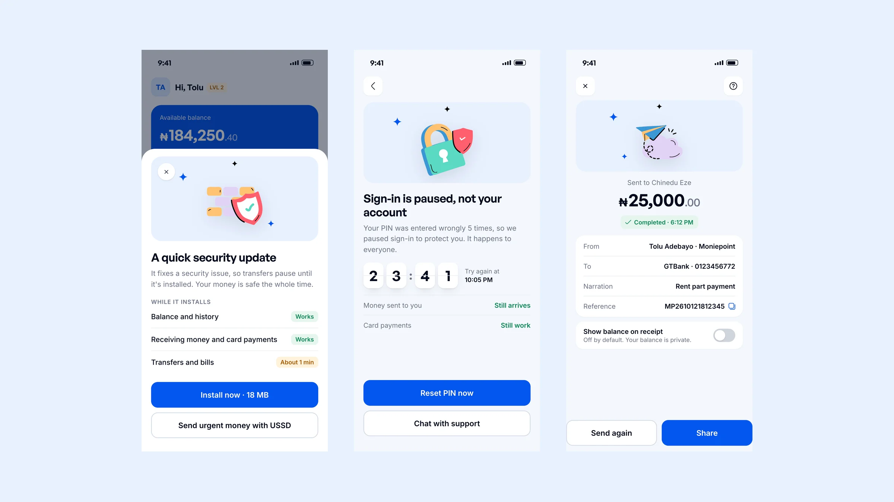
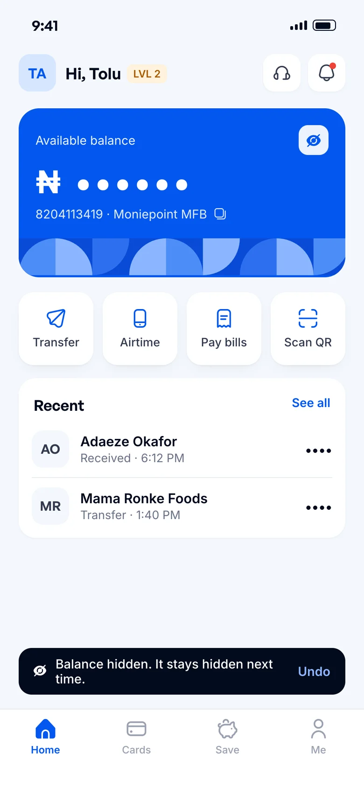
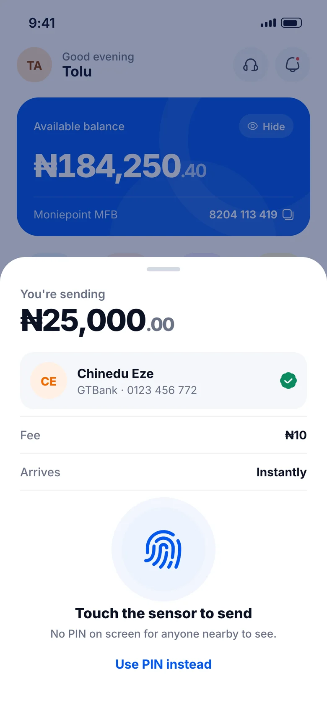
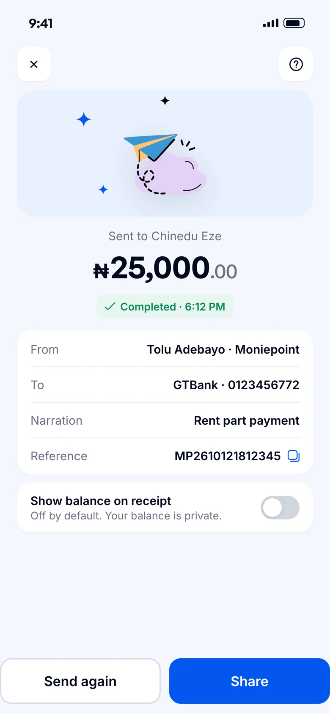
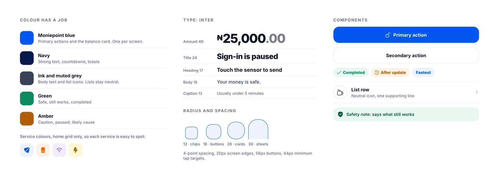

Moniepoint: getting locked-out customers back to their money
I read 520 Google Play reviews of Moniepoint's personal banking app. About one in five of this year's negative reviews came from people who couldn't get into the app at all. Not all of that is a design problem, so I separated what design can fix from what belongs to engineering and risk, redesigned the parts design owns, and added three smaller fixes that are pure design.

The worst bank app moment:
your money is there, and you can't reach it.
- The problem: 35 of the 158 one to three star reviews from 2026 in my sample are from people who couldn't get into the app. Several say they moved to OPay or PalmPay.
- Why it matters to Moniepoint: a customer who can't get in can't make transfers, and every transfer carries a fee. Lockouts also flood customer support, the second most common complaint.
- What design can't fix: the face-check software, failed installs and backend bugs. Those belong to engineering, and what fallbacks are allowed belongs to risk and the regulator. I say where that line is instead of pretending screens solve everything.
- What I designed: updates that only block your money when security demands it, a face check that coaches you before the photo, and a lockout screen that tells you when and how you get back in. Plus three quick wins design fully owns: one-tap balance hiding, fingerprint approval for transfers, and receipts that don't expose your balance.
- Honest status: self-initiated and untested, built only on public reviews. Below are the questions I'd answer with Moniepoint's own data first, and how I'd measure the result.
What 158 unhappy customers
wrote about in 2026.
I loaded 520 reviews from Google Play and kept the 158 rated one to three stars and written in 2026. I tagged each one by what it complained about; a review can carry more than one tag. Tap a bar to see what people said, in my words.
How far this evidence goes: these are the reviews Google Play shows as most relevant, not a random sample, and I tagged them by keyword. Reviews tell you what people felt, not what caused it. They're good for finding where to look, not for sizing the problem.
Fees and missing money get more mentions, but they're mostly pricing and operations problems. Getting in is partly a design problem, and it's the one that stops everything else: you can't pay a fee, or chase a refund, from outside the app. So that's where I looked next.
Design can fix part of this.
Here's where the line is.
Each access problem has a part design owns and a part it doesn't. A designer who pitches screens for an engineering bug loses credibility fast, so I drew the line first.
Questions I'd answer with Moniepoint's data first
- Of failed face checks, how many fail on photo quality (too dark, too far) and how many on the software itself? Coaching only helps the first group.
- Of all update blocks in the last 90 days, how many were security releases that had to block?
- How long do lockouts last, and how many end in a support chat rather than a PIN reset?
The parts design owns,
in three moments.
These screens only work if engineering and risk agree to the policy behind them, so I'd bring them as a proposal to all three teams, not a finished answer. Pick a moment to see the redesign and the reasoning.
Three fixes design owns
from start to finish.
Smaller stakes than getting locked out, but no engineering mystery behind them. Each one comes straight from reviews.

Hide your balance in one tap
What people said: hiding and showing the balance means a trip into Settings every time. That review has 456 people marking it helpful.
The fix: an eye toggle on the balance itself, and the app remembers the choice.

Approve transfers with a fingerprint
What people said: biometrics work for login but not for transfers, so people type their PIN in public. The top review on this has 524 helpful votes, and the complaint is still coming in 2026.
The fix: fingerprint as the default, PIN one tap away. Very large transfers may still need a PIN; where that limit sits is the risk team's call.

Receipts that don't expose your balance
What people said: shared receipts show the sender's account balance, so showing someone proof of payment also shows them how much you have.
The fix: balance off by default, with a switch if you really want it. The emailed receipt matches the in-app one, which another reviewer asked for.
Designed in Moniepoint's language,
tightened with the best of fintech.
A redesign pitched to a company should look like their next release, not someone else's app. So I started from Moniepoint's own visual language: the patterned blue balance card, white action tiles, the account-tier pill, light-blue shapes with floating cards for illustration, and the General Sans and Inter type pairing from their website.
Then I tightened it with how Wise, Monzo, Chime and Cash App build their systems. Lists stay neutral, so colour only shows up where it means something: blue for the next action, green for "this still works", amber for "this is paused". Amounts lead with the number, and decimals step back.

What I studied,
and what I borrowed.
Before designing, I looked at how other money and identity apps handle the same moments, using Mobbin.
- Face checks: Wise fills a ring around the oval and floats one instruction above it; Lovi shows a light-level pill; Noom rates lighting. I combined all three so people know what to fix before the check fails.
- Lockouts: Up turns the wait into a flip-clock countdown and Vipps says "it happens to the best of us". I kept the countdown and the tone, and added a way to skip the wait.
- Updates: Rivian lists what stops working during an install. I flipped it to lead with what still works, because for a bank that's the worry.
- Confirming payments: Cash App states the payment as one big sentence and Careem says the payment is protected by biometrics right above the button.
- Home and receipts: N26 blurs a hidden balance instead of replacing it with dots, and Careem gives receipts a clear status and a "send again" action.
Icons: Uicons by Flaticon.
If Moniepoint shipped this,
these numbers should move.
What I'd test first: the face check coaching, after the data question above tells us how many failures come from the photo. I'd put a clickable prototype in front of 8 people with mid-range Android phones in normal indoor light and compare first-try success with the current flow.